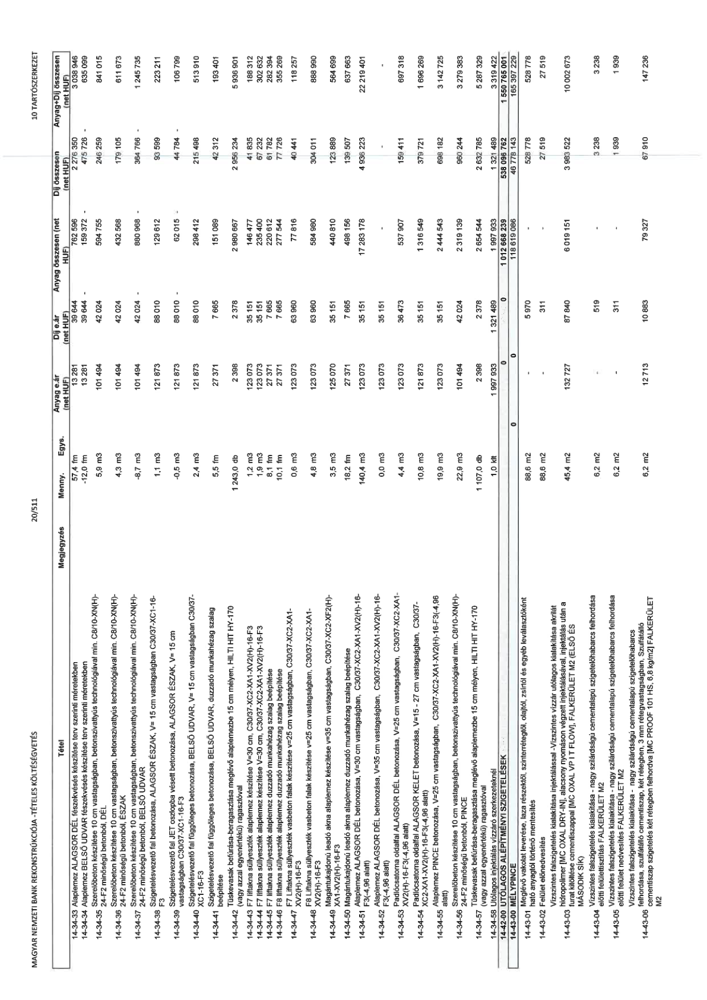

| Tétel | Megjegyzés | Menny. | Egys. | Anyag e.ár (net HUF) | Díj e.ár (net HUF) | Anyag összesen (net HUF) | Díj összesen (net HUF) | Anyag+Díj összesen (net HUF) |
|---|---|---|---|---|---|---|---|---|
| 14-34-33 Alaplemez ALAGSOR DÉL fészekvésés készítése terv szerinti méretekben | NaN | 57,4 | fm | 13 281 | 39 544 | 762 330 | 2 269 826 | 3 032 156 |
| 14-34-34 Alaplemez BELSŐ UDVAR fészekvésés készítése terv szerinti méretekben | NaN | 11,8 | fm | 13 281 | 39 544 | 156 716 | 466 619 | 623 335 |
| 14-34-35 Szerelőbeton készítése 10 cm vastagságban, betonszivattyús technológiával min. C8/10-XN(H)-24-F2 minőségű betonból, DEL | NaN | 5,9 | m3 | 101 494 | 42 024 | 598 815 | 247 942 | 846 757 |
| 14-34-36 Szerelőbeton készítése 10 cm vastagságban, betonszivattyús technológiával min. C8/10-XN(H)-24-F2 minőségű betonból, PINCE | NaN | 4,3 | m3 | 101 494 | 42 024 | 436 424 | 180 703 | 617 127 |
| 14-34-37 Szerelőbeton készítése 10 cm vastagságban, betonszivattyús technológiával min. C8/10-XN(H)-24-F2 minőségű betonból, BELSŐ UDVAR | NaN | 8,7 | m3 | 101 494 | 42 024 | 883 000 | 365 609 | 1 248 609 |
| 14-34-38 Szigetelésvezető fal JET oszlopba vésett betonozása, ALAGSOR ÉSZAK, V= 15 cm vastagságban C30/37 XC1-16-F3 | NaN | 1,1 | m3 | 121 873 | 88 010 | 134 060 | 96 811 | 230 871 |
| 14-34-39 Szigetelésvezető fal függőleges betonozása, ALAGSOR ÉSZAK, V= 15 cm vastagságban C30/37-XC1-16-F3 | NaN | 0,5 | m3 | 121 873 | 88 010 | 60 937 | 44 005 | 104 942 |
| 14-34-40 Szigetelésvezető fal függőleges betonozása, BELSŐ UDVAR, V= 15 cm vastagságban C30/37-XC1-16-F3 | NaN | 2,4 | m3 | 121 873 | 88 010 | 292 495 | 211 224 | 503 719 |
| 14-34-41 Szigetelésvezető fal függőleges betonozása, BELSŐ UDVAR, duzzadó munkahézag szalag beépítése | NaN | 5,5 | fm | 27 371 | 7 665 | 150 541 | 42 158 | 192 699 |
| 14-34-42 Tüskék furat beütése-beragasztása meglévő alaplemezbe 15 cm mélyen, HILTI HIT HY-170 (vagy azzal egyenértékű) ragasztóval | NaN | 1 243,0 | db | 2 398 | 2 378 | 2 980 714 | 2 955 854 | 5 936 568 |
| 14-34-43 F7 liftakna süllyeszték alaplemez készítése V=30 cm vastagságban, C30/37-XC2-XA1-XV2(H)-16-F3 | NaN | 1,2 | m3 | 123 073 | 35 151 | 147 688 | 42 181 | 189 869 |
| 14-34-44 F7 liftakna süllyeszték vasbeton falak készítése V=25 cm vastagságban, C30/37-XC2-XA1-XV2(H)-16-F3 | NaN | 1,9 | m3 | 123 073 | 63 960 | 233 839 | 121 524 | 355 363 |
| 14-34-45 F7 liftakna süllyeszték fészekvésés készítése terv szerinti méretekben | NaN | 8,1 | fm | 13 281 | 39 544 | 107 576 | 320 306 | 427 882 |
| 14-34-46 F7 liftakna süllyeszték duzzadó munkahézag szalag beépítése | NaN | 10,1 | fm | 27 371 | 7 665 | 276 447 | 77 417 | 353 864 |
| 14-34-47 F8 liftakna süllyeszték vasbeton falak készítése V=25 cm vastagságban, C30/37-XC2-XA1-XV2(H)-16-F3 | NaN | 0,6 | m3 | 123 073 | 63 960 | 73 844 | 38 376 | 112 220 |
| 14-34-48 Magasított/nyomott lemez alsó alaplemez készítése V=25 cm vastagságban, C30/37-XC2-XA1-XV2(H)-16-F3 | NaN | 4,8 | m3 | 123 073 | 63 960 | 590 750 | 307 008 | 897 758 |
| 14-34-49 Magasított/nyomott lemez alsó alaplemez készítése V=25 cm vastagságban, C30/37-XC2-XA1-XV2(H)-16-F3 | NaN | 3,5 | m3 | 123 073 | 35 151 | 430 756 | 123 029 | 553 785 |
| 14-34-50 Magasított/nyomott lemez alsó alaplemez duzzadó munkahézag szalag beépítése | NaN | 18,2 | fm | 27 371 | 7 665 | 498 152 | 139 503 | 637 655 |
| 14-34-51 Alaplemez ALAGSOR DÉL betonozása, V=25 cm vastagságban, C30/37-XC2-XA1-XV2(H)-16-F3 (-4,96 alatt) | NaN | 140,4 | m3 | 123 073 | 35 151 | 17 279 449 | 4 935 200 | 22 214 649 |
| 14-34-52 Alaplemez ALAGSOR ÉSZAK betonozása, V=30 cm vastagságban, C30/37-XC2-XA1-XV2(H)-16-F3 (-4,96 alatt) | NaN | 0,0 | m3 | 123 073 | 35 151 | 0 | 0 | 0 |
| 14-34-53 Alaplemez ALAGSOR KELET betonozása, V=15 cm vastagságban, C30/37-XC2-XA1-XV2(H)-16-F3 (-4,96 alatt) | NaN | 4,4 | m3 | 123 073 | 35 151 | 541 521 | 154 664 | 696 185 |
| 14-34-54 Padlócsatorna ALAGSOR KELET betonozása, V=15 cm vastagságban, C30/37-XC2-XA1-XV2(H)-16-F3 (-4,96 alatt) | NaN | 10,8 | m3 | 121 873 | 35 151 | 1 316 228 | 379 631 | 1 695 859 |
| 14-34-55 Alaplemez PINCE betonozása, V=25 cm vastagságban, C30/37-XC2-XA1-XV2(H)-16-F3 (-4,96 alatt) | NaN | 19,9 | m3 | 123 073 | 35 151 | 2 449 153 | 699 505 | 3 148 658 |
| 14-34-56 Szerelőbeton készítése 10 cm vastagságban, betonszivattyús technológiával min. C8/10-XN(H)-24-F2 minőségű betonból, PINCE | NaN | 22,9 | m3 | 101 494 | 42 024 | 2 324 213 | 962 350 | 3 286 563 |
| 14-34-57 Tüskék furat beütése-beragasztása meglévő alaplemezbe 15 cm mélyen, HILTI HIT HY-170 (vagy azzal egyenértékű) ragasztóval | NaN | 1 107,0 | db | 2 398 | 2 378 | 2 654 586 | 2 632 446 | 5 287 032 |
| 14-34-58 Utólagos injektálás vízzáró szerkezeteknél | NaN | 1,0 | klt | 1 997 933 | 1 321 489 | 1 997 933 | 1 321 489 | 3 319 422 |
| 14-43-01 Meglévő vakolat leverése, laza részek eltávolítása, olajtól, zsírtól és egyéb leválasztóktól való felületmentesítés | NaN | 88,6 | m2 | 0 | 5 970 | 0 | 528 778 | 528 778 |
| 14-43-02 Felület előnedvesítése | NaN | 88,6 | m2 | 0 | 311 | 0 | 27 519 | 27 519 |
| 14-43-03 Vízszintes falszigetelés kialakítása injektálással - Vízszintes vízzáró utólagos kialakítása akrilát hidropolimer [MC OXAL DRY-IN] alacsony nyomáson végrehajtott injektálásával, injektálás után a furatok kitöltése cementiszappal [MC OXAL VP IT FLOW], FALKERÜLET M2 (ELSŐ ÉS MÁSODIK SÍK) | NaN | 45,4 | m2 | 132 727 | 87 040 | 6 019 151 | 3 951 522 | 9 970 673 |
| 14-43-04 Előtti felülettisztítás FALKERÜLET M2 | NaN | 6,2 | m2 | 0 | 519 | 0 | 3 238 | 3 238 |
| 14-43-05 Vízszintes falszigetelés kialakítása - nagy szilárdságú cementalapú szigetelőhabarcs felhordása előtti felület nedvesítése FALKERÜLET M2 | NaN | 6,2 | m2 | 0 | 311 | 0 | 1 939 | 1 939 |
| 14-43-06 Cementiszap szigetelés két rétegben felhordva [MC PROOF 101 HS, 8,8 kg/m2] FALKERÜLET M2 | NaN | 6,2 | m2 | 12 713 | 10 883 | 79 327 | 67 910 | 147 236 |
